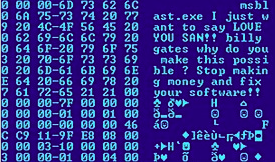

Source: https://en.wikipedia.org/wiki/Brute-force_attack
These attacks may be used when there is no option or possibility to use other weaknesses in a system.
Longer passwords, passphrases and keys are much harder to guess than shorter ones, as there are more possibilities and variations to guess correctly.
(Source: Wikipedia - Brute Force Attack)

Source: https://en.wikipedia.org/wiki/Computer_worm
It uses a computer network to spread itself and relies on security failures to target and access computers.
It will use the target computer as a host to scan and infect further computers.
(Source: Wikipedia - Computer Worm Attack)
Source: https://www.businesstoday.in/technology/internet/story/cryptojacking-attacks-rose-by-8500-per-cent-globally-in-2017-105549-2018-04-04
It is done against the crypto miner's will and while they are unaware that the cryptojacking is occuring.
Prior to 2019, Coinhive was a type of software often used for this type of web attack, and the most targeted cryptocurrencies were privacy coins as they have hidden transaction histories.
(Source: Wikipedia - Cryptojacking Attack)

Source: https://en.wikipedia.org/wiki/Denial-of-service_attack
The aim of the attack is to flood the machine or resource with many requests so the system is overloaded and prevents real requests from being actioned.
In preventing these attacks, it is not sufficient to block a source of the request, as it is likely there will be requests of this nature coming from multiple sources.
(Source: Wikipedia - Denial of Service Attack)

Source: https://en.wikipedia.org/wiki/Insider_threat
This may include employees, former employees, contractors, associates or any other related person who may have inside information about the organisations internal security measures, data and computers.
An example of such a threat may include fraud, theft of information/data, theft of intellectual property or sabotaging computers and systems.
(Source: Wikipedia - Insider Threate Attack)

Source: https://en.wikipedia.org/wiki/Malware
Malware can include subtypes of other web attacks such as viruses, worms, trojan horses, ransomeware etc.
Malware is rapidly increasing each year and contributes substantially to financial crime around the world. Cybercrime was anticipated to cost USD $6 Trillion in 2021.
(Source: Wikipedia - Malware Attack )
Source: https://www.propertycasualty360.com/2019/05/24/how-effective-employee-education-and-training-combats-phishing-attack-risk-414-155823/?slreturn=20230719105106
In 2020, Phishing was the most common type of cybercrime performed by attackers.
Types of Phishing include: Email phishing, spear fishing, whaling and CEO fraud etc.
(Source: Wikipedia - Phishing Attack )

Source: https://en.wikipedia.org/wiki/Spoofing_attack
Examples of spoofing include Spoofing and TCP/IP and Domain Name Spoofing.
Domain Name Spoofing is used to describe multiple classes of phishing attacks that depend on false or misrepresented internet domain names. This persuades users to visit a copy-cat website usually passing off as a legitimate website.
(Source: Wikipedia - Spoofing Attack )

Source: https://www.greekboston.com/culture/mythology/odysseus-trojan-horse/
They are generally circulating through a social engineering method.
For example: a use is tricked into opening an email attachment or clicking on a fake advertisement. This then allows the attacker to have unauthorised access to the device and enables ransomeware attacks to occur.
(Source: Wikipedia - Trojan Horse Attack )

Source: https://www.cloudsek.com/blog/a-guide-to-the-most-popular-zero-day-attacks
Until the vulnerability is mitigated, hackers can exploit it to expand the vulnerability to other devices, software or datasets.
Once the owners or those who work alongside the software become aware of the vulnerability, they generally create a software patch or provide a workaround to avoid breaches and to mitigate the associated risks.
(Source: Wikipedia - Zero Day Attack )